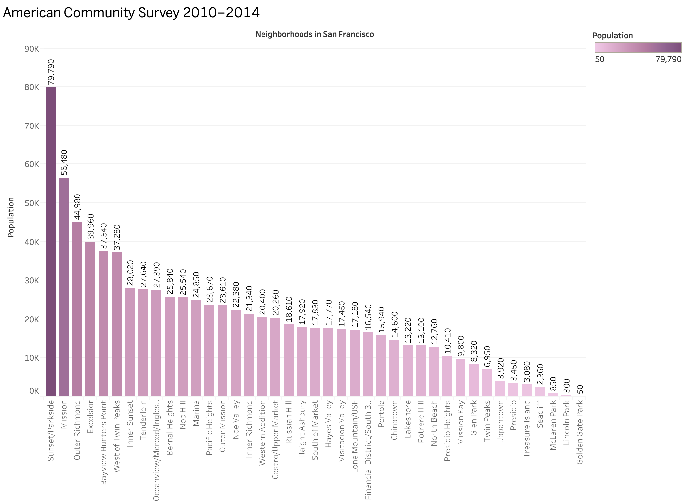

Divya's Visualizations
Visualization-1 (D3)
Interpretation
The above stacked bar shows the number of emergency calls, made from San Francisco neighborhoods on th year 2018. Data for each neighborhood is grouped by call type groups which are mainly divided into four categories: Alarm, Fire, Non-Life threatening, Potentially life threatening. Mouse hover over each neighborhood's respective call type groups, gives the number of calls received for that group. Also change the values in the dropdown menu to sort the bar chart. Data can be sorted by Alphabetical(Neighborhoods)-ascending and Number of calls-descending.
Discussion
When the data is analyzed for each neighborhood, its shocking to see that most of the calls made to San Francisco fire department were for potentially life threatening emergencies and the number of calls are pretty high. These calls need to be addressed with high priority and require to have less response time. The calls that are classified as 'Potentially Life threatening' are mainly medical emergencies. The analysis of the data makes us wonder, why fire department has to respond to all the life threatening emergencies? The answer is explained in Lompoc Record Click on the popup image below to see the population recorded on each neighborhood by sfplanning.org based on American Community Survey 2010–2014 (The image was made using Tableau by creating a csv file from sfplanning.org pdf manually). This helps to get a better understanding about the relation between population and emergency call records in each neighborhoods.
Credit
Data set: Data SF Code References: KatiRG’s clickable stacked bar chart Mike Bostock’s Sortable Bar Chart w3schools Other Supporting Data References: sfplanning.org Lompoc Record How Fast Do Firefighters Respond?